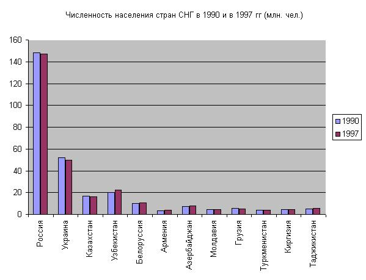
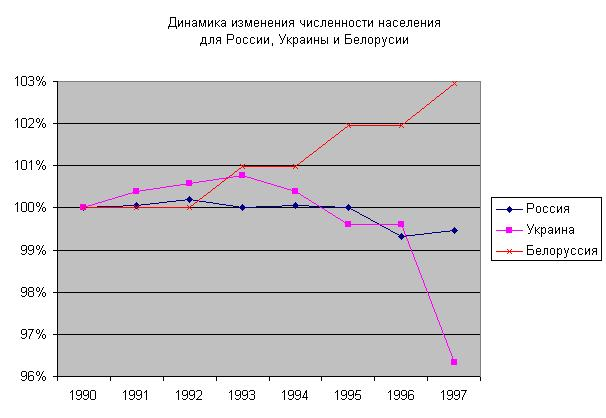

Загрузите документ LRexc-03.xls.
Сохраните его копию в своей сетевой папке под тем
же именем.
На рабочем листе "Численность" удалите все
строки, кроме тех, что содержат данные о странах
СНГ.
Постройте таблицу, содержащую относительные
значения (индексы) численности населения,
отнесенные к численности населения в 1990 году. Для
этого выаолните следующие действия:
Скопируйте всю таблицу в нижнюю часть того же
рабочего листа (например, в область A20:I33).
В первую ячейку скопированной таблицы введите
формулу, позволяющую вычислить относительные
значения численности населения. Используйте
относительные и абсолютные ссылки.
Скопируйте полученную формулу во все ячейки
новой таблицы.
Если все сделано правильно, должна получиться
таблица, аналогичная приведенной здесь.
На отдельном рабочем листе с именем
"ДиагНаселение1" по данным исходной таблицы
постройте диаграмму, аналогичную приведенной
ниже:

На отдельном рабочем листе с именем
"ДиагНаселение2" по вычисленным Вами
индексам прироста населения постройте
диаграмму, аналогичную приведенной ниже:

Повторите те же действия с данными на рабочем
листе "ВВП". Построенные диаграммы
сохраните на рабочих листах "ДиагВВП1" и
"ДиагВВП2".
{kind=link}